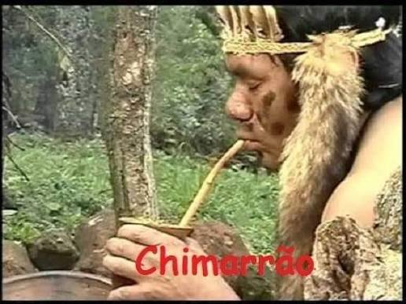
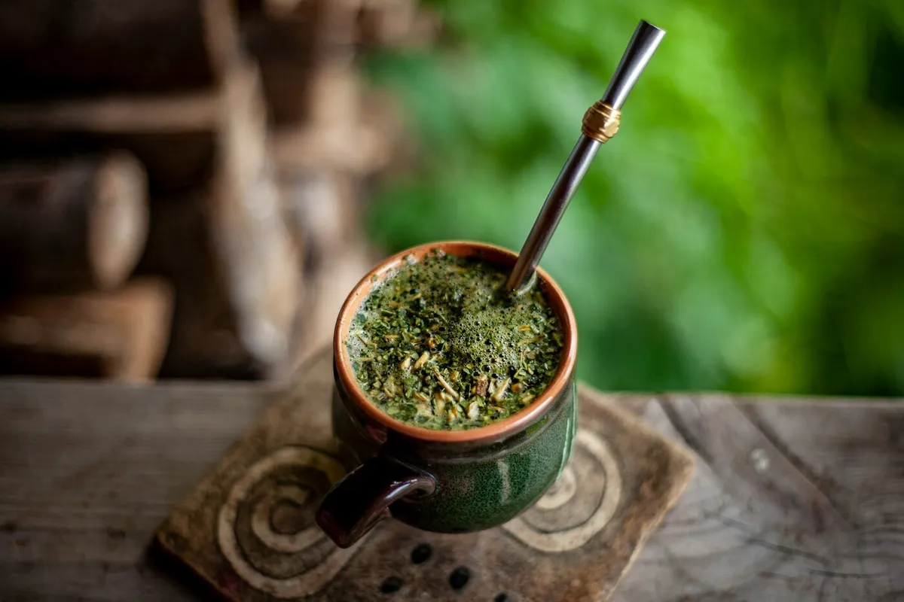
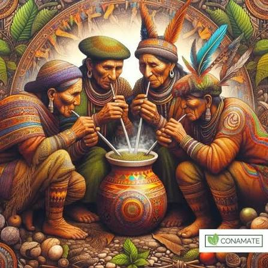

A ERVA-MATE E OS POVOS INDIGENAS
A erva-mate foi usada primeiro pelos povos indígenas Guarani, Kaigang e Xokleng do sul da Ameríca do Sul. Pra eles, a planta era sagradae chamada de "caá". Eles mastigavam as folhas ou faziam chá para dar energia,espantar a fome, o frio e o cansaço, e também usava em rituais e rodas de conversa com símbolo de união.

possos indigenas descobrem a erva-mate
A erva-mate é muito mais que uma bebida: ela tem origem na cultura dos povos indígenas do sul da Ameríca do Sul, principalmente os Guarani e Kaingang. Para eles, a erva-mate era sagrada.Usava a erva-mate mais conhecida como llex paraguariensis como remédio, alimentos e também em rituais.O chimarrão era simbolo de união, respeito e conversa entre a comunidade. O ato de compartilhar a cuia representa amizade e igualdade.

Mate: Cultura e Traduição Originária
Com a chegada dos colonizadores, o conhecimento indígena sobre a erva-mate foi passado adiante. Hoje ela virou tradição no Brasil, Argentina, Paraguai e Uruguai, mas a raiz continua sendo indígena.

A história da Erva-mate; Da tradição indígena à Cultura Sul-Americana